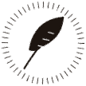
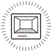
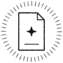

Parcels and side missions
The twelve things a Traveling Agent delivers, and the twenty-four secret side missions. The last three cards show one side mission open, complete and failed.

a brass key that fits no lock
From a Traveling Agent
a jar of warm sand
From a Traveling Agenta ticket for a train that left yesterday
From a Traveling Agent
a single black feather
From a Traveling Agent
a pocket watch running backwards
From a Traveling Agenta sealed letter addressed to you
From a Traveling Agent
a vial of grey perfume
From a Traveling Agenta deck of cards missing the Queen
From a Traveling Agenta candle that smells of rain
From a Traveling Agent
a photograph of an empty room
From a Traveling Agenta velvet-lined box (empty)
From a Traveling Agenta compass that points at you
From a Traveling AgentGo on at least two missions.
OpenGo on at least three missions.
OpenGo on no more than one mission.
OpenGo on mission 1 or mission 2.
OpenDo not go on mission 1 or mission 2.
OpenLead a team that goes on its mission.
OpenNever lead a team that goes on its mission.
OpenBe on a mission that succeeds.
OpenBe on a mission that fails.
Open
Never be on a mission that fails.
OpenVote Reject at least three times.
OpenNever vote Reject.
OpenVote Reject on a team the table approves.
OpenVote Approve on a team the table rejects.
OpenBe on the losing side of a team vote twice.
OpenAlways vote with the majority.
OpenApprove the first proposal of two different missions.
OpenBe named on at least three proposed teams.
OpenPut yourself on a team you propose.
OpenNever put yourself on a team you propose.
OpenGo on a mission together with the player on your left.
Open
Hold the Candle at some point.
OpenNever change your Hunch (and place at least two).
OpenSuspect three different players with your Hunches.
OpenApprove the first proposal of two different missions.
Open · your vote counts onceApprove the first proposal of two different missions.
Your Last Stand vote counts doubleCompleteApprove the first proposal of two different missions.
Your Last Stand vote counts halfFailed